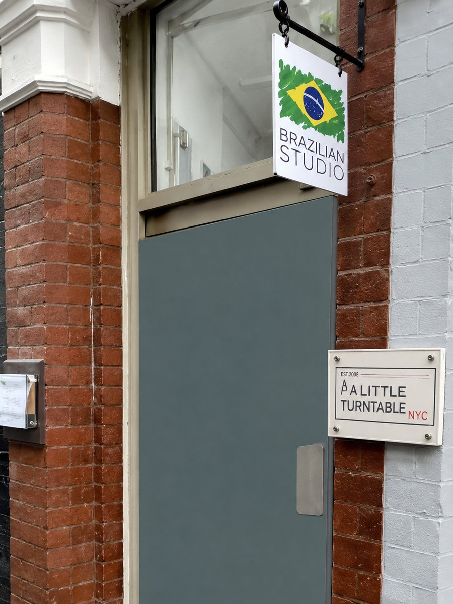

Personal care from Marcia
Every appointment is carried out personally, in private.
Your body. Your culture. Your choice.
Professional intimate waxing in a private studio where every woman is welcome. Whether it is your first Brazilian or your hundredth, you will be listened to, respected and looked after.
Brazilian · Hollywood · Bikini · Body & Face

Every appointment is carried out personally, in private.
TRAINED IN BRAZIL & PORTUGAL · WAXING IN LONDON SINCE 2008
London experience
Discreet and unhurried
No judgement, no assumptions
Holborn is home to women who work, study, live and travel here from all over the world. Intimate waxing means different things to different women, and I believe a studio in this part of London should understand that.
You do not have to explain your background, defend your preferences or feel embarrassed about your body to receive excellent care. Your nationality, religion, age or appearance never tells me what you want. I ask, I explain, and I respect your decisions.
A natural look, a tidy bikini line, a Brazilian with a strip left at the front, or a Hollywood. There is no standard you need to follow and no choice you need to justify.
If you have personal, cultural or religious preferences, tell me before your appointment. We will talk it through and agree how to proceed. Your details and your treatment stay discreet.
Coarse, fine, curly, sensitive, prone to ingrown hairs: I take your skin and hair into account and never assume one technique suits everyone.
You are always welcome to say: "Please explain what you are doing." "I would like a quieter appointment." "Could we pause for a moment?"
Not sure which wax to choose? Tell me the result you would like and I will explain the options in plain language. Everything is agreed with you before we begin.
Removes most intimate hair while letting you keep a strip, triangle or another agreed shape at the front.
Complete hair removal from the agreed intimate areas, for a fully smooth finish.
A neat tidy of the hair outside your underwear line, leaving the rest untouched.
A more defined finish, with extra hair removed along the sides and upper area.
Prices may vary slightly depending on hair growth. Call +44 7851 423765 for an exact quote.
Every appointment follows the same careful process I have refined over 18 years, built for hygiene, comfort and lasting results.
Skin is thoroughly cleansed and soothed, and prepared for waxing to minimise sensitivity and reduce the risk of irritation.
Strip wax is used for body areas; strip-less hot wax is used for sensitive intimate zones, applied with precision and care.
All residue is carefully removed and a calming hydration lotion is applied to leave skin soft, soothed and smooth.
You do not need to know the terminology or arrive knowing exactly what you want. We begin with a short conversation: your chosen treatment, the areas you would like treated, your skin and any worries. You can ask me to pause or stop at any point.
Intimate waxing calls for high standards of hygiene, skin assessment and professional boundaries. You are always welcome to ask about my procedures or the products I use.
Redness or slight sensitivity is normal for a short time. Simple steps keep your skin calm and smooth.
Freshly waxed skin is more sensitive to sunlight. Avoid direct sun and sunbeds for 48 hours.
Heat can irritate freshly waxed skin. Stick to lukewarm showers for the first 24 hours.
Sweat and friction can irritate the skin. Take it easy for a day and wear loose, breathable clothing.
Once your skin has settled, gentle exfoliation can help prevent ingrown hairs. Never pick or squeeze them. If you have persistent pain, spreading redness, pus or significant swelling, please seek advice from a healthcare professional. This is general guidance and does not replace medical advice.
A Brazilian removes most intimate hair and can leave a strip or small shape at the front if you wish. A Hollywood removes all hair from the agreed intimate areas. We confirm exactly what is included before I begin.
Absolutely. Many clients come for their first wax with me. I explain each step, and you can ask questions or pause whenever you need to.
Yes. You can keep a strip, a triangle or a natural look. You never need to justify your choice.
Yes. Please tell me before your appointment so we can discuss your preferences and agree what is possible.
Yes. Every women's appointment is carried out personally by Marcia.
I treat women from many backgrounds and I never assume what you want from your nationality, religion or appearance. I ask, I listen and I adapt the treatment to your skin and hair.
Let me know about sensitivity, ingrown hairs, previous irritation or recent skin treatments. I will tell you honestly whether waxing is suitable and how to approach it.
It is possible, but skin can be more sensitive at that time. Tell me when you book and we will decide together.
Of course. I am Brazilian and also speak Portuguese. If you would like simpler explanations or extra time to talk things through, just say so.
It varies with your hair growth cycle, but many clients enjoy smooth results for around three to four weeks, with finer regrowth over time.
Tell me straight away. We can pause, adjust or stop, and you stay in control throughout.
A Full Female Brazilian is £45 and a Full Female Hollywood is £50. See the price list above for everything else.
7/8 Little Turnstile, Holborn, London WC1V 7DX

7/8 Little Turnstile
Holborn, London WC1V 7DX
Private. Professional. Personal.